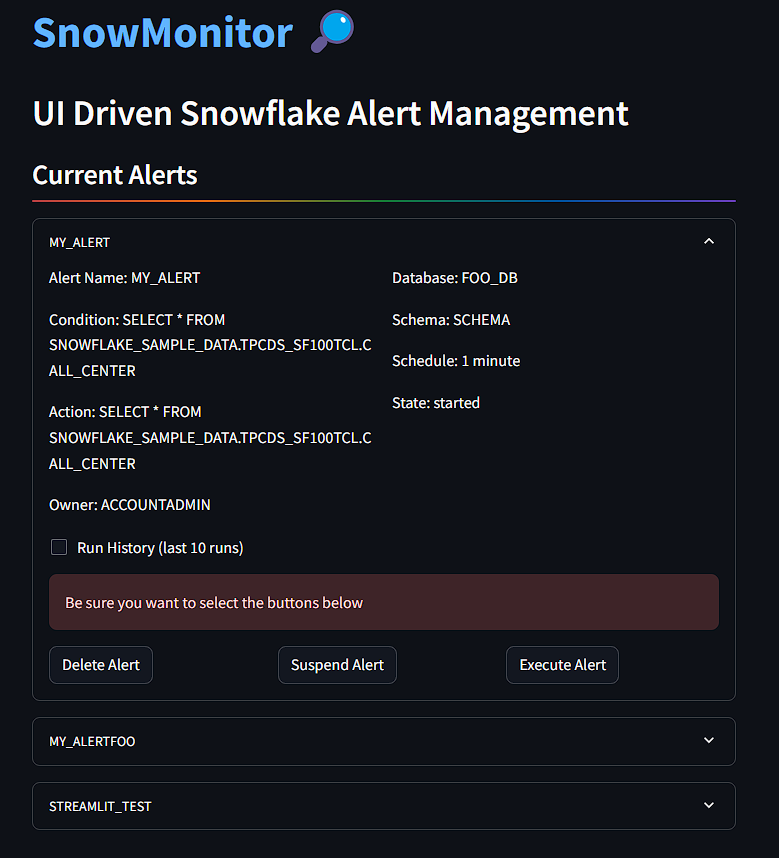
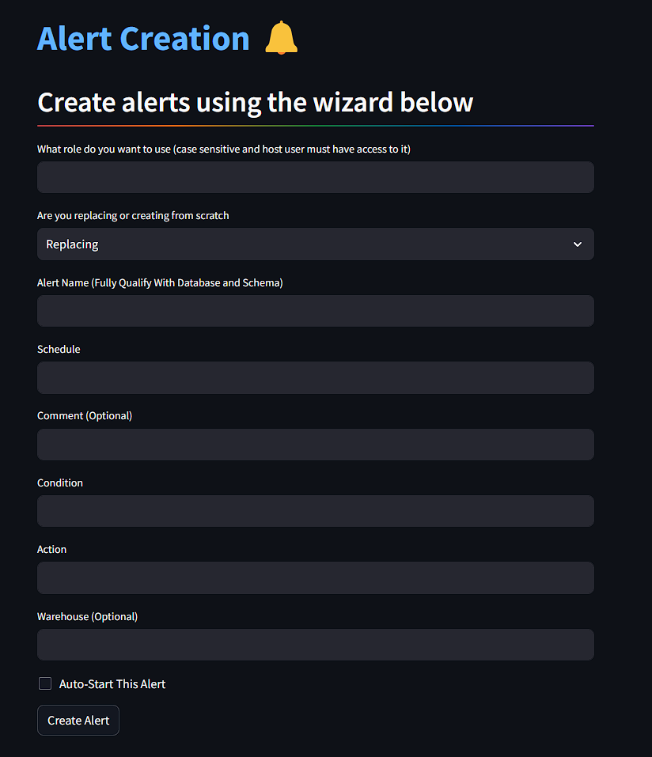

Last year, I worked with a client who needed us to design, prototype and test a large number of snowflake alerts to track cost and data usage. Creating and testing these alerts all within SnowSQL and coordinating saving SQL code across a team of developers was a balancing act. It can be difficult to elegantly save alert creation scripts as well as quickly query alert history once you exceed ten to twenty alerts. To create alerts, you need to open a new snowflake worksheet, switch to the proper role, database and schema, then follow the syntax on Snowflakes documentation to create a new alert and resume it. To debug the alert, users then need to query the correct views in the information schema, filtering by date and alert name. This process is time consuming and would have been faster and smoother had we had a UI driven way to create new alerts and pull up alert histories across our wide portfolio of Snowflake alerts.
I started working on SnowMonitor to provide Snowflake administrators with a cleaner way to manage Snowflake alerts within a streamlit environment. Snowmonitor provides a clear way to view all active alerts within a Snowflake environment, look at alert history and suspend, resume, execute or delete alerts. It also features a wizard for alert creation, removing the need to utilize the Snowflake documentation to put required and optional parameters in the correct order.
In the alert management dashboard pictured below, all active or suspended alerts are displayed, with the ability to expand and display all alert parameters, trigger history and buttons for deleting, suspending and executing the alert. This is vastly faster than querying "SHOW ALERTS", choosing an alert to know more and querying the information schema, and finally executing an action with an "ALTER ALERT" statement. With SnowMonitor, everything is a click away, making the management of alerts faster and more transparent
The alert creation wizard has been created to streamline the alert creation process and reduce room for error. An administrator now just needs to put in the required fields, hit enter and SnowMonitor automatically creates and executes the creation of an alert. The wizard also has optional fields for comment and has an option for automatically kicking off the alert, tagging will be added in a future release.
Stand up of the tool is easy, anyone with a basic grasp of the command line and Python can start working in SnowMonitor in under ten minutes. Just clone the repo, follow the instructions to create a local .env file and launch the application locally. To host the application in the cloud, I would reccomend hosting on a private Streamlit Cloud application where login credentials can be stored within Streamlit which utilizes GCPs secrets feature. In a future release, I'd like to enable hosting on a Snowflake Native App to allow for direct integration with Snowflake. If you'd like to stand up the tool yourself, you can access the repo here:
Snowmonitor is available as a paid application that anyone can log into and immediatly begin managing their alerts. I'm asking for $5 a month or $50 a year but feel free to message me for a free trial.
SnowMonitor SnowMonitor Github Repository